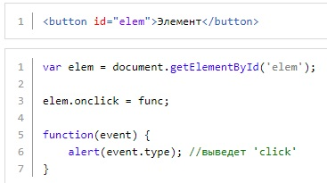

Объект Event (объект Событие) содержит в себе информацию о произошедшем событии. К примеру, если по элементу был сделан клик, мы можем узнать координаты этого клика, была ли нажата клавиша Ctrl, Alt или Shift в момент клика и так далее.
нужно при объявлении нашей функции func передать в нее параметром любую переменную (например, event - но название может быть любым) и в эту переменную браузер автоматически положит объект Event
Пример
function muFunc (event){};
координаты клика относительно окна браузера можно найти так: event.clientX для координаты по горизонтали и event.clientY для координаты по вертикали.
Так же можно получать координаты не относительно окна браузера, а относительно самого элемента (блока, картинки и т.д.). За это отвечают методы: offsetX и offsetY
Что бы получить координаты курсора относительно верхнего левого угла документа, можно использовать свойства event.pageX и event.pageY
Рассмотрим пример: привяжем блоку событие onmousemove (срабатывает при движении мышкой по элементу), и будем показывать координаты курсора при движении мыши относительно самого элемента:
Код HTML
Код JavaScript

Объект Event также содержит в себе тип события, к примеру для события onclick это click, для onmouseover это mouseover и так далее. Доступ к типу события можно получить так - event.type:
Как получит значение id или class элемента по которому кликнули:
Если будет вызван данный метод, то действие события по умолчанию не будет выполнено.
пример
т.е. теперь при нажатии на объект правой кнопкой мыши не будет вызвано контекстное меню.